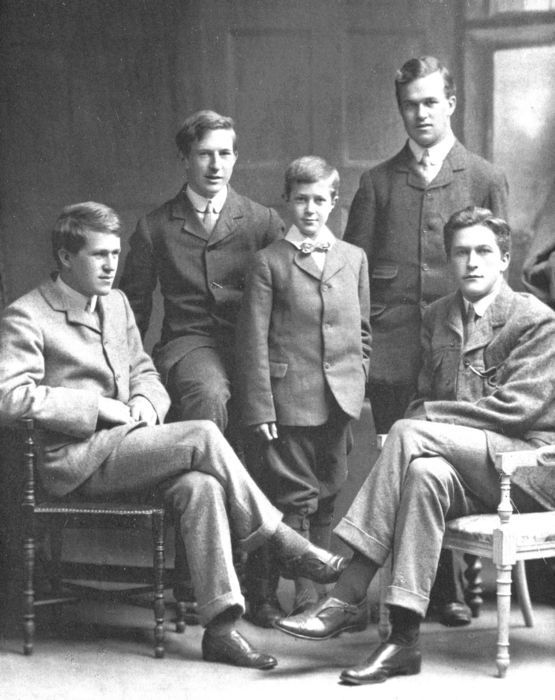
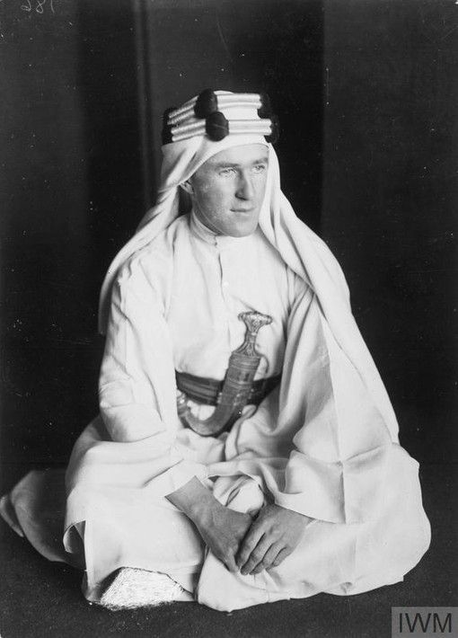
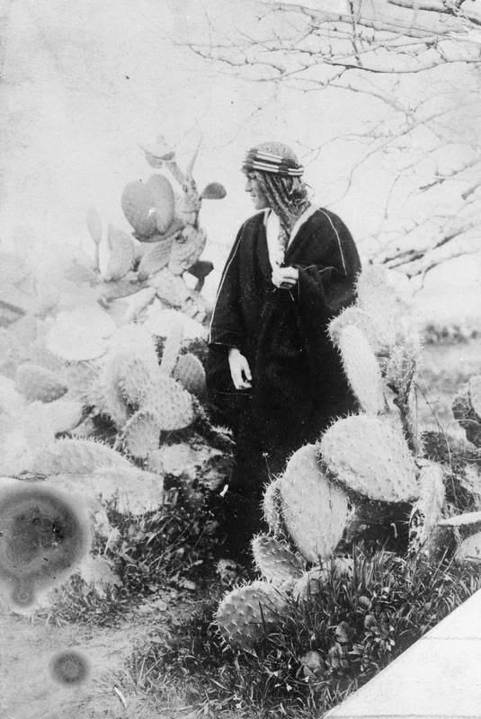
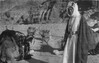
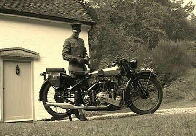

Т. Э. Лоуренс и кактус Зачем он туда встал? |
 Лоуренс был ростом всего лишь 165 см, но его можно увеличить. Brough Superior Иногда говорят, что именно после того как Т. Э. разбился, мотоциклисты стали носить шлемы |